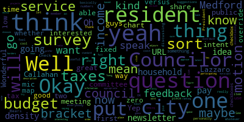
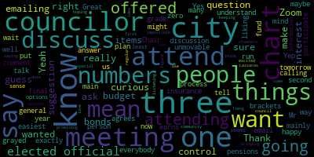
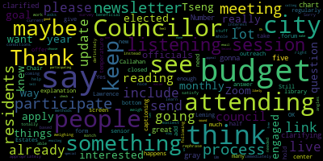
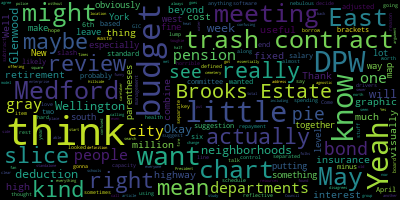
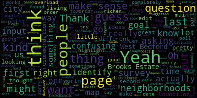

[Leming]: Check mic one, two, check mic one, two. Welcome, we'll now have a meeting of the resident services and public engagement committee meeting. The sole topic that we will be discussing is amending and approving the budget survey, which will go out to guys guys, which will go out to collect feedback from residents on the budget process. We're. No, I will not accept disruptions from Council President Bears, who I remind everybody is not a member of this committee, but seems to be intruding on our affairs. OK. So the only feedback that I found that I believe was sent in that I saw was a, and I will just go ahead and share. share my screen really quickly just so everybody knows what I'm looking at. The only piece of feedback that I saw was this very nice infographic from Councilor Callahan, which basically shows a breakdown of Medford's budget in a wonderful pie chart. Most of it's education, insurance, pensions. And I feel like that does a great job of clarifying to residents what kind of budget we have. Absolutely, Councilor Callahan. I will, one moment. How do I do this again?
[Callahan]: Thank you. Just on on this chart. This was really just for discussion only this is the 2024 numbers not the 2025 numbers, and mainly what I wanted to ask about before I run the 2025 numbers is I grade out and put in brackets, three items. because I want people to understand that those three items are not things that are under our control at all. And one is insurance, one is pensions, and one is bonds, bonds and interest. And I just wanted to, so we don't talk about it right this second, but like, so that you know, this is not like the final chart. It's really for us to discuss. Thanks.
[Leming]: Right. Well, I personally think that's that an updated version of this would be very useful to residents along with probably just the total numbers in there as well just for instead of percentages if that's possible to add like.
[Callahan]: Do we want to discuss the chart now?
[Leming]: What?
[Callahan]: I'm happy to discuss the chart.
[Leming]: Uh I'll let Councilor Lazzaro go first. I'm seeing.
[Lazzaro]: Number five.
[Lazzaro]: Thank you. I was only gonna say that a lot of it is gray, but then you clarified that for me. Thank you. I think the chart is great to include and some clarifying explanation below. Thank you.
[Leming]: And we have another who would like to speak, who is not a member of this committee, but I suppose we can let him speak anyway. I think, yeah, whatever you guys want.
[Bears]: I hope it's horrible. No, just, I really wasn't gonna say anything, but did a budget chart. Come on, a budget chart you don't want me to talk about? That's like my thing. And if this is beyond like the software's capacity, maybe that you're using, I think it might be useful to do it. You know how like sometimes you see that pie chart and there's a little slice of the pie that's separated from the rest of the chart. I think it might be useful to lump insurance, pensions, bonds, and interest in like a little slice and be like this slice is fixed costs that are defined by the retirement board and the GIC and the bond. Well, bonds and interest I think is a little more nebulous because we do decide how much to borrow, it's just we don't control the repayment schedule. But I just think a little chart being like here's all the stuff that's we're not actually spending on the departments other than health insurance and pensions and the city's retirement pension and I just love that little graphic where you have a slice of the pie. And then I think it might be really visually, because I looked at this and I was like, why so much gray? That's hard to see. Then I was like, people aren't going to see that 21% of the budget is, 22% of the budget is this. So just a thought. Thank you.
[Callahan]: Great. I'm liking that. My main question was, are those three the three that should be grayed out? I just want to make sure that everybody agrees. Yes, just the general fund. In my mind, those are the three that we just can't control them. And so they're just unmovable.
[Bears]: The other thing I might suggest is actually combine DPW, but then separate out the trash contract line item and gray that out. Because the reason DPW highway is so high is that's almost all the trash contract. Yeah, it's like, I think, 7 million of the 9 million for DPW highways the trash contract and that's also one of the key fixed cost drivers along with, especially in this year's budget, so that might be worth putting in the gray as well waste management trash contract, and then if you subtract that out and then combine all of DPW together, I think that would just be a little more reflective of essentially that it's schools, police, fire, DPW, and everything else. And DPW together, you mean including cemetery and... Yeah, but also that, and obviously leave out water, sewer, because it's enterprise, but half of the total DPW budget is the trash contract.
[Leming]: Yep. So I just, the notes I took were that to put the fixed costs in a pop out of the pie chart to clarify and separate the trash line item from the DPW since that's a fixed cost. Also just like put in a text explanation of the chart, but I think that's obvious. And to put in the actual dollar amounts. Okay, so Council Gowan, do you think you'd be able to do that, do that on your own since.
[Callahan]: Yep, I can plan on doing that tomorrow.
[Leming]: All right, cool. Thank you. See the only other suggestions that I sort of had and I, I just, I essentially jotted down things that I would like to see from that I think are interesting pieces of information to have from residents But I'm not 100% sure if it's appropriate to put out in a municipal survey. But I would like to have a demographic question about household income in there, like household income brackets. The other thing is a question about And again, these can be phrased differently but the intent of the question is what one time city projects do you think what one time projects you think the city ought to fund the idea behind that being, you know that we have free cash and some idea of how the residents would like to spend things like that would be useful. And this is more just things that I'm interested in. I would like, I was thinking it would be interesting to have some questions about whether or not residents favored the tax override but again I'm not that that's one that I've kind of been like going back and forth on whether we would put that out just some sort of opinion on that. The last question that I was interested in knowing about from residents, there's this sort of idea that in cities you can have low taxes or you can have more and stable city services or you can build up the density of the city in order to increase commercial revenue. So those sort of three factors right there. And so I wanted some kind of a question that would rank residents preferences on that. So do they think that lower taxes are more important than keeping density? than keeping density low, or do they think that city service, they'd be willing to pay more taxes in order to have more city services. These are just things I would be interested in getting information on generally, but obviously, these are just items that we can discuss.
[Tseng]: Councilor Tseng. Thank you. So I guess we can start. I did create a dropdown of that, as you suggested, of neighborhoods on the second page. Oh yeah, that was the other thing that I put there. I based the neighborhoods off of what people responded last time. just how people kind of self-sorted into neighborhoods when it was an open question. But I don't know if there are any more neighborhoods we want to add in since it's not kind of a formal thing here. I know like Brooks Estate, we could do that, but I think a lot of people, like some people identify as Brooks Estate. Some people identify as living like near the Brooks Estate, some people identify as living in West Bedford. I thought that might be a little confusing, but then West Bedford's tough to sort out because I think they're like different parts of West Bedford. I think it would be useful to have a map. Yeah, so I was looking for maps. basically no maps, unless we make one but I think it's hard to do that drawing.
[Bears]: Yeah. Council President, I don't know if you've seen the New York Times study of our article it's kind of a graphic of the neighborhoods of New York City, and they like they all everyone disagrees. So they kind of did a heat map. I mean obviously that's way beyond the level of resources that we have. And I think too, right, like you could make an argument, there's a lot of folks, and actually it goes back, it's funny, it's really old, or right now, people who call the east side of the city East Medford, like, and there's an in-between group that is more like calling it Wellington or Glenwood. So I don't know, I've always been a fan of kind of offering a north, south, east, west square model, and then kind of putting in like in parentheses like East Medford, Wellington Glenwood, West Medford, maybe you could put Brooks Estate or something, South Medford, Hillside, it could be in parentheses, I don't know. But I agree that Brooks Estate as a standalone is a little confusing. I think this is fine. If I was to make a suggestion, I would change it to like Wellington slash Glenwood slash East Medford or something like that. But that's I'm agnostic on that I really think we don't have a clear definition of where some neighborhoods and other neighborhoods start, I think, okay so another suggestion maybe would just be to have.
[Leming]: a map of, like a map of Medford, just the borders, and then put the words Wellington, Glenwood, South Medford, just on the map, but not actually specify the borders.
[Bears]: I've found that a lot of people don't have, actually can't place their location on a map. Yeah. Visually, without being able to search their address. So. Yeah. Yes. It's a toughie. I just wouldn't do Brooks Estate because I think that got me very confused to just be like the caretaker of the Brooks Estate.
[Tseng]: Yeah, no, I think that's a great point. I was doing that out there to be like, is that confusing? But evidently, it's probably confusing. So that's the main edit I've made with regards to what you sent me.
[Callahan]: Mr. Chair.
[Leming]: Did you put your mic on?
[Unidentified]: Well, I can't see that you actually turned it off.
[Lazzaro]: Can you send a link to is this a live form. Yes, this is a live. Can you send a link to Councilor Callahan and myself, please. so that we can see. I couldn't see the bottom half of the screen because of the closed captioning. And I didn't see that Lawrence Estates is on there, and I was going to say that you should add it, but it was on there already. That's OK. Thank you.
[Tseng]: Yeah, this is what I used last time. Yeah, I mean, I wish there was better stuff. I think it just costs money to get. Do you have another recommendation? Oh, for the most part, I took out some things I kind of adjusted some things, but do you have any ideas.
[Bears]: Okay. he's met for. All right.
[Tseng]: It's actually a really pretty divisive issue. People have pretty strong feelings about it.
[Leming]: I'm really up in arms about that one. OK. So I'm just going to refresh this here.
[Tseng]: Matt, to your point about income, I thought about that last time. I don't think it's not worth asking. I guess we should just really highlight that this is an anonymous form.
[Leming]: Yeah. I mean, I just don't think that household income is like that non-standard of a question. It's not a crazy question to ask. But yeah, like it is. It is. It's good context, I guess.
[Tseng]: How should we define the bans then? And then, yeah. And are other Councilors comfortable with that question?
[Leming]: Do I hear any objections to speak now forever, hold your peace. Okay. Okay. Maybe by like tax brackets. I mean, well, so the tax brackets are like zero to 11,000. 11,000, 47,000, 47, 100, 100 to 191, 191 to 243, 243 to 609, and then 609 or above. President Bears, I was just going to say for simplicity's sake, maybe zero to 50, 50 to 100. Oh yeah, you don't have to do like the full 47, 47 to 100, but yeah.
[Bears]: Or even maybe, yeah, I think it's fine. It's probably more representative to get more accurate data, especially at the low end and the high end.
[Tseng]: Yeah. Yeah, I guess I think what might make sense is rounding to the next 10,000 or something, or 5,000, something like that.
[Leming]: Yeah, well, maybe like 0 to 15,000, 15,000 to 50,000, 50,000 to 100, 100 to 200, 200 to 600, then 600 plus.
[Tseng]: We found we found how we're going to fund the city. Okay, just 200 plus.
[Leming]: If y'all billion now. Michael Bloomberg, what do you think about the Medford budget? Okay, well, yeah, I'll leave it to your discretion whether to put the 600 plus in there or not, but I feel like those other brackets are fairly reasonable and they're at least based on some sort of a standard. Okay.
[Callahan]: And I'm just curious why one to 15, and not one to 25.
[Leming]: Well the first income bracket is zero to 11,600. So I just figured but we could we could round it to 25 if you think that would be more appropriate.
[Callahan]: I'm just, I mean, I guess we won't know until people answer the question but like we might get zero like 11,000 a year like who earns. Yeah, I mean, well, I don't know maybe so many people.
[Bears]: I was present bears, I would just also know that the tax brackets are based on adjusted gross income, and then minus the standard deduction. So, if you want to go at it that way. The standard deduction is what I only know is my taxes is 14 six so 11 plus 14 six is about 25.
[Leming]: Okay, so people don't think about their.
[Bears]: They're probably thinking their salary, not their adjusted salary, minus the deduction, which is what the brackets are based off of.
[Callahan]: Yeah.
[Bears]: That's a good point.
[Leming]: Not to get too technical. Okay. So those numbers, whatever they were, sounded great to me.
[Unidentified]: I'll just make it look nicer.
[Tseng]: Do something around that range and to make it look nice. And I, I think the right sorry. um I was i'm not completely sure. I'm not completely sure about the override thing. Could you describe? Yeah, OK.
[Leming]: So I guess with the override thing and the ranking of density versus high versus low taxes versus city services, the intent of that question is to try to form some kind of an inquiry where we could figure out what residents prefer to. spend less in taxes, or would they prefer to get more services in the future because it is it is a trade off, and I earnest. No, no, no, no, this is one where this is what we're just discussing so this is one of my one of my submissions and I'm trying to think of a way to phrase the question in a way that doesn't sound like weird on a municipal survey. But I would like to, I would like to get an idea because I hear a lot of residents around the city, particularly during the override campaign we're saying, you know, We want to we want to pay more to invest in our schools than their other residents who are saying well we, you know, we're fixed income households and we don't want to pay extra pay extra taxes. And so, the intent of the question is to try to figure out from respondents, what their sort of rankings. like what their priorities are, so to speak.
[Tseng]: I guess I would worry in that sense that like it veers too much towards a poll, like, and this isn't, it's, it's just like a feedback, like input survey rather than like a poll. And I think like, I guess my worry is like a question like that's so complex, because for some, some for a lot of voters, it's like sometimes yes, and sometimes no, right? Like, it's like really depends on what, what the spending is on. And what the tax increase looks like. I think that's the main reason I would kind of hesitate from putting it on there. I also just don't want to overload. I just don't want to overload the survey with questions, too. Yeah, I'm fine. The back of the chair broke.
[Unidentified]: The chair's not OK. I'm OK.
[Tseng]: I'm sorry.
[Unidentified]: Yeah. You are on camera.
[Tseng]: Okay.
[Leming]: Well, yeah, I understand though that that is like, um, that could be a bit of an out of place question, but it was something I was personally curious about. So if we don't think that it's, it has a place in the survey, that's fine. Um, Yeah, that was basically all I had.
[Tseng]: Cool.
[Leming]: Does anybody else have any suggestions for this survey?
[Callahan]: This isn't exactly a suggestion. It's more, I don't know what it is, comment, I guess. What is the easiest way for you to participate in the budget process? And then it's like emailing your elected official, calling your elected official, or attending city meetings. If I were a person who is not a city councilor, I would be like, wait, I have to email my city councilor? What am I going to tell, what am I going to say? Like, what do you mean? Like, it doesn't, I'm not sure what we can say there, but those three options, like attending city meetings, that at least makes sense to me because like you attend, right? And then you get some information, but like emailing your elected official, like with no, it just seems like an impossible ask.
[Leming]: Well, maybe once we have word-based Councilors, it'll be more of a personal relationship going on there.
[Lazzaro]: Still a few years out. I would say maybe we can update that to include our newsletter because that's something we can say, like reading the city council's newsletter attending a listening session at the senior center that happens monthly. We do have like new things that people can do, or attending a listening session at the library about the budget, we could hold those, we could give updates in a forum like that. maybe we could offer something like that could be something that we do more regularly.
[Tseng]: I guess I think what would maybe make sense if you can you actually go to the last page. What might make sense then is for me to switch the orders. Let's see what you say.
[Lazzaro]: You have to answer.
[Tseng]: Wow.
[Leming]: Also, just a note there, some of these are checkboxes when they should be radio buttons. Yes.
[Tseng]: Yeah, I noticed that too.
[Leming]: Option five.
[Tseng]: What might make sense is switching the first and second question on this page. So asking people about how to keep up to date first. And then, because what I was thinking about participation is like, Like once you know, like what you want to say like what's the easiest way for it like to participate which I guess like would make sense, logically, the flip the order in a hazard.
[Leming]: Also include URLs to these things Councilor Callahan.
[Callahan]: I was excited by Councilor Lazzaros suggestions here was just what I was. hoping bringing this up would come to you. I love the idea also from Councilor Tseng of like first say, how are you keeping up to date? And then after that, I think we should use this to figure out what we should do. And so attending regular city council meetings in the chambers, then we could say, you know, if we offered, you know, a listening session in the community, would you attend? If we offered a Zoom, special budget Zoom meeting, would you attend? Not promising that we're going to do these things, but saying we're curious to see what interest there is. If we offered these things, would you attend?
[Leming]: Yeah. I like that phrasing of it. Councilor Lazzaro?
[Lazzaro]: Just a question for Councilor Tseng and Councilor and Chair Leming, is the goal Is the goal here to take the temperature of who, which residents or how many residents are interested enough in the budget process to see like how much outreach we would need to be doing to appropriately match that interest? Or is it to satisfy the budget asks of our residents for this budget this year and just immediately do that work for them based on a survey?
[Tseng]: So I think there are two goals. So there's a goal on the first page, and then the third page has a different goal. I think the first page's goal is to provide a way for residents to just give feedback or input about the budget. Again, I think I caution people against using that as a representative sample of the city, because all of these surveys skew, richer and like, like to be honest, richer, whiter, more homeowning, right? And so I think it's important for us to be careful on that front. But treat it like people emailing us, for example. And then the last page, I think, is for us to collect a little bit more information about how we can best engage with the public. Of course, it's going to be skewed towards people who already can. But I find that in the last survey, there was some good input about like other things we could do that kind of were like the early percolations of ideas that led to a lot of what we do now.
[Leming]: Councilor Lazzaro.
[Lazzaro]: I do think that it's, I think coming at it from both angles is definitely something we should keep doing because you're totally right that the people that are going to be already weighing in on the things that they want to see more of are the people that are the most engaged. But before I was on the city council, I only knew about what I knew about and I the like, I really needed to learn more about the current conditions of the city's budget before I would have been able to weigh in. And I think listening sessions and Zoom meetings or any of that stuff could be really beneficial for a lot of people. So I do think that those are nice ways to help people get engaged if they're interested in it.
[Leming]: I am all for using this survey, both to gather feedback and to essentially use it as an advertisement for the things that we do. Great. So Councilor Tseng, what do you, with your schedule, what do you think is the, yeah, there's like a budget tab under. What do you think is the timeline you'll be able to get this out by? Pretty soon.
[Tseng]: Like once we have the new pie chart in, so after like tomorrow.
[Leming]: All right, cool. And then just get all that and then start blasting it on social media.
[Tseng]: Yeah. Does anyone have, language for like asking for like the zoom listening session, kind of like what, what we can offer question. I just, I was like fixing other stuff while we were talking about that. Thank you.
[Lazzaro]: Sorry. Um, I think what I would want to do is rephrase what is the easiest way for you to participate in the budget process like that whole question. Maybe to say, maybe to say instead, which of the following methods of participating in the budget process appeal to you? check all that apply. Does that sound good? And you could say attending city meetings, calling elected officials, emailing elected officials, you could keep those. But then you could also say, attending a listening session with a city councilor, reading a monthly newsletter, attending a special zoom meeting about the budget.
[Leming]: Maybe like, what is your favorite way of participating?
[Lazzaro]: Which would you be most likely to participate in? So they would have to choose one?
[Leming]: Well, this is a radio. This could be like a checkbox, like which methods would you most likely.
[Lazzaro]: And then you could keep other. You could keep the if none of these apply, please feel free to tell us how we'll how we can make it easier for you to participate. That could stay there.
[Leming]: It should definitely be a checkbox thing, because I would rather read the city council newsletter than call my elected officials, since I only have to choose one. No.
[Lazzaro]: Let me email.
[Tseng]: Yeah, if you want to send me options to put in, that'd be great. I wrote down some of what you had, but I didn't get to all of it.
[Leming]: Councilor Tseng, I forgot, are you able to put URLs in the checkboxes?
[Tseng]: I can try and then see if it works. Yeah.
[Leming]: I'm pretty sure you can in the description. In the description, I think you can. If you go back to the first page. I mean, in the questions themselves. I know you can't because I just did it for something else, but I mean in the checkboxes, like the checkbox text itself. It would be good if you could have reading the city council's newsletter and then you have a link right there to the latest one.
[Tseng]: Do you want to refresh your page? I just put one in. I have to go all the way. Yep, that works.
[Leming]: Wonderful.
[Tseng]: I don't know if I can... Let me try one thing.
[Leming]: Oh, what a beautiful newsletter. I posted the latest newsletter to the website yet.
[Tseng]: So I don't think I can do it without it looking ugly, but I think it's possible.
[Leming]: Well, you could. I mean, it doesn't have to be like that. You could highlight it, then click put URL in there, and then just say click here or something. You don't have to include the full URL.
[Tseng]: Oh, I don't think I can highlight and put a URL in. Do you have edit access to this?
[Leming]: No. Oh. No, we could discuss this later if you share edit access with me. Yes. I could do that particular part.
[Bears]: I just wanted to thank you for the introductory preliminary budget meeting will be April 29, so two weeks from today. And then likely the two longer budget meetings will be the week of May, May 20th and 21st. We'll have one on the 6th, but I don't think we'll have one of the week of the 13th. So Justin, if that affects your calendar at all, like I would guess that the 30th of April and the 6th of May will likely be some of the smaller departments and then the larger departments would be in later in May.
[Tseng]: Do you have a recommendation for when we might want to set a deadline, like a due date?
[Bears]: I mean, if you want to leave it open to get as many comments as possible, I mean, it depends on the level of analysis this committee is planning to do. Do you want to have a meeting to review the results prior to, you know, if you set the deadline as we want to review this, you want to review, all right, May 7th is the next meeting of this committee. So if you wanted to review it at that meeting, then that would be your purview, yeah. Okay.
[Leming]: Depends on how many responses we could get in that two-week time period. All right. Is there any other recommendations from councillors? Justin, are you good?
[Tseng]: Yep. I'm good. Thank you. Thank you, everyone, for helping out. Thank you.
[Leming]: Thank you. Now we will have public participation.
[Tseng]: Can I actually speak as a public? No, go for it. Go for it.
[Leming]: Use this. I've always dreamed of leaving my council chair and then participating in public. It would be the strangest sight ever, but we can do it. Do we have any motions on the floor? Do we have a second to that motion?
[Tseng]: Oh, do we need a motion to distribute? No. Yeah, I think we do. Yeah.
[Leming]: Okay, motion to do we have a motion to approve and distribute and adjourn.
[Tseng]: Approve distribute can we ask, ask the city administration to put it out on their feeds I don't like, I don't think they will but worth asking.
[Leming]: Okay, so the motion is to approve the survey as discussed here. Request that the city administration use their channels to distribute it and adjourn.
[Lazzaro]: Second.
[Leming]: No, I didn't make them. Oh, yeah.
[Lazzaro]: Councilor Tseng did.
[Leming]: Yeah, okay. Yeah, Councilors are seconded. Wonderful. Mr.
[Lazzaro]: He doesn't have to we can just say, Oh, we're all here.
[Leming]: What am I, what am I, it's it's late. We just had a lot of all those in favor.
[Lazzaro]: Aye.
[Leming]: Opposed. Motion passes meeting is adjourned.
|
total time: 13.7 minutes total words: 1801  |
total time: 3.11 minutes total words: 505  |
total time: 4.22 minutes total words: 603  |
total time: 5.51 minutes total words: 1004  |
|
total time: 6.94 minutes total words: 1093  |
|||
{kind=link}
{kind=link}
{kind=link}
{kind=link}
{kind=link}